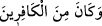

kilim dokunmuştu. “__WORD__ (Kâfirlerden idi).” (el-Bakara, 2/34)
Hâfız dedi ki:
Bir kimsenin siyahla dokunmuş baht kilimini
Zemzem ve Kevser suyu ile ağartmak mümkün değildir
Sa’dî dedi ki:
Senin hallerin, hareketlerin iyi olsun kötü olsun
Allah’ın takdir eliyle nakşedilmiştir
Kaptanı üstünü başını paralasa dahi
Allah gemiyi dilediği yere götürür
Sâib dedi ki:
Bizim ihtiyârımız, Hakk’ın ihtiyarı gibi olmaz
Bizim kıvılcımımız güneşin nuru ile nasıl denk olabilir?
Buhârî, İlim, 31; Müslim, Îman, 241.
Tirmizî, Birr, 55; Dârimî, Rikak, 74; Müsned, V, 153, 158, 169, 228, 236.
Deylemî, hadis no: 2464.
Buhârî, Cenaiz, 81; Müslim, Îman, 39.
Buhârî, Cenaiz, 81; Tefsir (9), 16; Müslim, Îman, 39; Nesâî, Cenaiz, 102; Müsned, V,
433.
Müslim, Kader, 17; İbn Mâce, Muk. 13; Müsned, VI, 91.
Tirmizî, Kader, 7; Müsned, III, 112, 257.
Tirmizî, Menakıb, 17, 18; Müsned, I, 456.